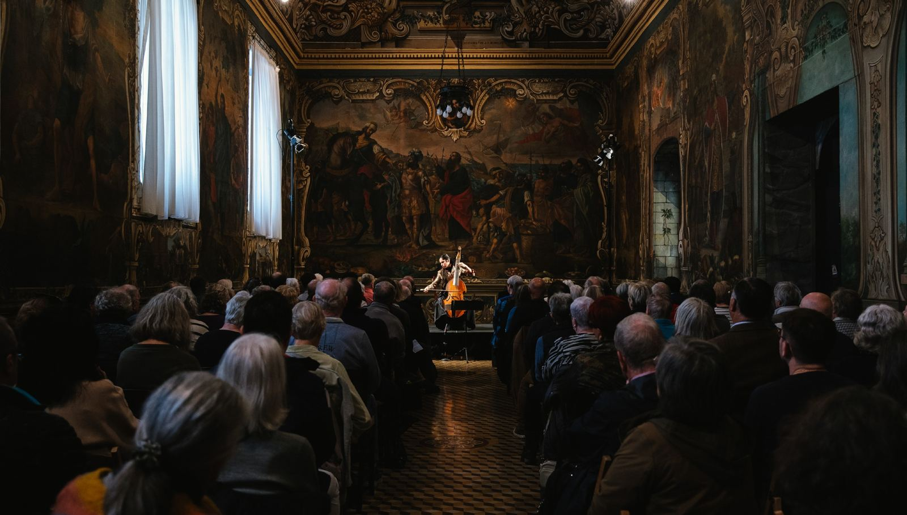

Festivals · Music
Valletta Baroque Festival 2027
- Dates
- –
- Location
- Valletta, Malta
- Format
- In-person
- Category
- Music
- Industry
- Baroque music festival
- Organiser
- Festivals Malta
- Official website
- https://www.festivals.mt/vbf
About
15th edition. Official launch post and festival page give the 7–24 January 2027 span. Individual concerts are at multiple venues; the opening concert is officially at St John’s Co-Cathedral, Valletta, on 7 January 2027. Dates are local to the host city (Central European Time, UTC+1 / UTC+2 in summer).
Topics: baroque music, classical music, historic venues.
No organiser attendance figure found on the official pages fetched 24 Nov 2026. Ranked by our estimated size tier 'medium' (10,000-30,000 attendees/visits), a judgement from format, venue and scale, not an official number.
Sources
- Official — https://www.festivals.mt/vbf
- Official — https://www.festivals.mt/post/festivals-malta-launches-the-15th-edition-of-the-valletta-baroque-festival
- Official — https://www.festivals.mt/
Hotels
- Grand Hotel Excelsior — 5★ · Great Siege Road, Floriana FRN 1810, Malta · 0.8 km from the venue · Price on request · Venue page
- The Phoenicia Malta — 5★ · The Mall, Floriana FRN 1478, Malta · 0.7 km from the venue · from USD 411.42/night · 7–9 January 2027 · as of 24 November 2026 · Venue page
- Rosselli AX Privilege — 5★ · 167 Merchants Street, Valletta VLT 1174, Malta · 0.1 km from the venue · from USD 200.86/night · 7–9 January 2027 · as of 24 November 2026
- Palais Le Brun — 4★ · 101 Old Bakery Street, Valletta, Malta · 0.2 km from the venue · from USD 141.43/night · 7–9 January 2027 · as of 24 November 2026
- Domus Zamittello — 4★ · 7 Republic Street, Valletta VLT 1111, Malta · 0.4 km from the venue · Price on request